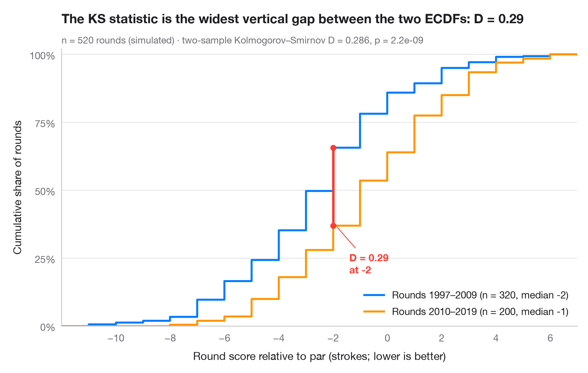

ECDF comparison
Empirical cumulative distributions of two groups, with the Kolmogorov–Smirnov gap.

An empirical cumulative distribution function (ECDF) plots, for every value on the x-axis, the share of observations at or below it. Unlike a histogram it needs no bins, and every quantile can be read off directly. When two ECDFs are drawn together, the largest vertical distance between them is exactly the two-sample Kolmogorov–Smirnov statistic D, drawn here as a red segment.
Data are the 442 patients of the diabetes study bundled with
scikit-learn (load_diabetes(scaled=False)): body-mass index by sex.
scipy.stats.ecdf builds the curves and scipy.stats.ks_2samp returns D, its
location and the p-value.
import matplotlib.pyplot as plt
import numpy as np
from scipy import stats
from sklearn.datasets import load_diabetes
# Data: body-mass index of diabetes patients, split by sex (coded 1 / 2)
df = load_diabetes(as_frame=True, scaled=False).frame
groups = {"Sex 1": df.loc[df.sex == 1, "bmi"].to_numpy(),
"Sex 2": df.loc[df.sex == 2, "bmi"].to_numpy()}
palette = ["#007AFF", "#FF9500"]
# Two-sample Kolmogorov–Smirnov test: D is the largest vertical gap
ks = stats.ks_2samp(*groups.values())
x_gap = ks.statistic_location
F = [stats.ecdf(d).cdf for d in groups.values()]
y_gap = [f.evaluate(x_gap) for f in F]
lo, hi = df.bmi.min() - 0.5, df.bmi.max() + 0.5 # common x-range for both curves
fig, ax = plt.subplots(figsize=(8, 5))
for (name, d), f, c in zip(groups.items(), F, palette):
ax.step(np.r_[lo, f.quantiles, hi], np.r_[0, f.probabilities, 1], where="post",
color=c, lw=2, label=f"{name} (n = {len(d)}, median {np.median(d):.1f})")
# Mark the KS distance
ax.plot([x_gap, x_gap], y_gap, color="#FF3B30", lw=2.5, solid_capstyle="round", zorder=5)
ax.scatter([x_gap, x_gap], y_gap, color="#FF3B30", s=30, zorder=6)
ax.annotate(f"D = {ks.statistic:.2f}\nat BMI {x_gap:.1f}", (x_gap + 0.2, min(y_gap)),
xytext=(x_gap + 2, min(y_gap)), ha="left", va="center", fontsize=10,
fontweight="semibold", color="#FF3B30",
arrowprops=dict(arrowstyle="-", color="#FF3B30", lw=0.8, shrinkB=2))
ax.set_xlim(lo, hi)
ax.set_ylim(0, 1.02)
ax.set_yticks(np.linspace(0, 1, 5), [f"{v:.0%}" for v in np.linspace(0, 1, 5)])
ax.set_xlabel("Body-mass index (kg/m²)")
ax.set_ylabel("Cumulative share of patients")
ax.legend(loc="lower right")
ax.set_title("Sex 2 has fewer low-BMI patients than sex 1", pad=26)
ax.text(0, 1.02, f"Two-sample Kolmogorov–Smirnov D = {ks.statistic:.3f}, p = {ks.pvalue:.3f}"
f" · n = {len(df)}", transform=ax.transAxes, fontsize=9.5, color="#6E6E73")
plt.show()
Figures use the optional Statlas style: add plt.style.use("statlas.mplstyle") to match the look exactly.
How to cite
Statlas is created and maintained by Thierry Warin. If it helped your work, please cite it.
Warin, T. (2026). ECDF comparison. In Statlas: The Python Gallery of Statistical Graphics. https://warint.github.io/pystatlas/distributions/ecdf-comparison/
@misc{warin2026statlas,
author = {Warin, Thierry},
title = {Statlas: The Python Gallery of Statistical Graphics},
year = {2026},
howpublished = {\url{https://warint.github.io/pystatlas/}},
note = {Source code: https://github.com/warint/pystatlas}
}More in Distributions

Histogram with density
Histogram, kernel density and fitted normal curve, with shape statistics.
ggplot2::geom_histogram() + geom_density()
Raincloud plot
Half violin, box plot and raw points per group, drawn horizontally.
ggdist::stat_halfeye() / ggrain::geom_rain()
Ridgeline plot
Overlapping density curves to compare one distribution across many groups.
ggridges::geom_density_ridges()